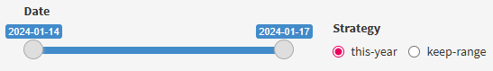
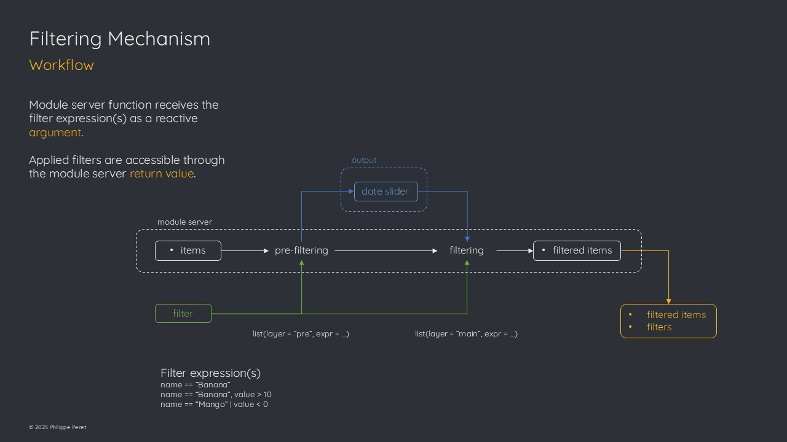

Filtering Items
Kitems provides features to enable automatic data filtering at the module server level.
Introduction
Filtering mechanism in the module server relies on dplyr::filter() function.
starwars %>%
filter(name == "foo",
value == 12)condition(s) are passed as expression(s) to the module server function using the
filterreactive argumenttwo filtering layers are implemented
date slider widget is provided with several strategies
helper function is available to build filtering events
Filtering layers
The filtering mechanism relies on the notion of filtering layers.
Pre-filtering layer
To work on a subset of the data across the app (ex. a given user).
It has to be considered as a lower level of filtering in the sense of the reactive chain inside the module server. The pre-filtering layer is applied from the items’ reactive object and produces an intermediate reactive object (it is not accessible from the outside of the module server).
If the pre-filtering layer is not set, then it will carry same content as the items.
Main-filtering layer
To work on a subset of the data based on user interactions or local filters (ex. a date range)
It’s a higher level of filtering, that is based on the intermediate reactive object built at the pre-filtering level. If no pre-filtering is applied, then the content of the items will be used.
The output of this level is accessible from the server function return value filtered_items element.
The date slider filter provided by the package is applied at the main filtering layer.
If the widget is implemented in the UI, it will be automatically added to the main filter expression(s) passed to the module server function.
This way, filters applied at the pre-filtering layer won’t need to be computed each time a user performs filtering UI interactions (saving computation time).
Filtered view
The item table widget is by default a filtered view of the items.
It displays the content of the filtered_items element of the module server function return value.
It is delivered through the filtered_view_widget() function.
Note
The reason for not having a non filtered item table is that if the goal is to display the whole list of items without any filtering, then there would be no added value compared to using the
DT::renderDT()/DT::DTOutput()functions directly in the main Shiny application.
Date slider
The date slider widget is automatically enabled when the data model contains an attribute that is named ‘date’ (strictly) and accessible through the date_slider_widget() function.

Its behavior is driven by two strategies:
‘this-year’ – automatically selects and extends the range of date belonging to current year upon item operations (this is the default).
‘keep-range’ – keeps the selected range no matter if items are added or removed 1
When the server is initialized, it will scan the items to setup the range to the minimum and maximum of the date column, and the selected range to the values fitting with current year. 2
Return value
To keep track of the filters applied to the items at a given time, the module server function includes a filters reactive element in its return value list.
The value of this element is itself a list of the form:
list(
pre = {'expression(s) passed at the pre-filtering layer'},
main = {'expression(s) passed at the main-filtering layer'},
date = {'value of date slider input'})Helper function
A filter_event() helper function is delivered to build the filtering events passed to the filter reactive argument.
The reason is that passing expressions to the module server function involves some meta-programming notions that may be too complicated for less experimented users.
If you want to know more about meta-programming with R, see Advanced R by Hadley Wickham.
Workflow

Considerations
Initialization
The most important point to understand when it comes to the initialization of the filtered_items (and its view) is that when the module server is launched, there is no way to determine if the main application will implement the date slider widget.
The module server checks the data model for a ‘date’ attribute and creates an output that will be accessible through the date_slider_widget() function. But it can’t guess if it’s actually going to be implemented of not.
For this reason, the filtered_items reactive value is initialized with the same value as items.
This means, if the content of filtered_items is reused within the main application – for example to build a plot – it is strongly advised to check if filters()$date is NULL or not to avoid computing the plot twice.
It can be done by implementing one of the following options in the renderPlot expression:
check if the filter input is “truthy” with
req(mydata$filter()$date)use
shiny::bindEvent()function on thefiltered_itemswithignoreInit = TRUE
Filtering or not filtering
The filtering capabilities are delivered to provide more flexibility to manage the items and serve them throughout the app.
That being said, there is a choice to make for when it’s better to do filtering at the module server level or at the main app level.
Because the module server return value is made of reactive objects, any update will affect the whole app wherever the return value is passed and code is taking dependency on its elements.
do filter at the module server level when the output data is meant to be used throughout the app
do filter at the main app level when it is meant to be used at a local level (for example prepare data for a specific plot)
Useful links
communication
shiny module
kitems()
dplyr::filter
helper function